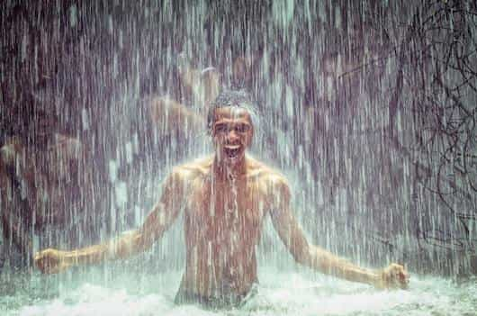
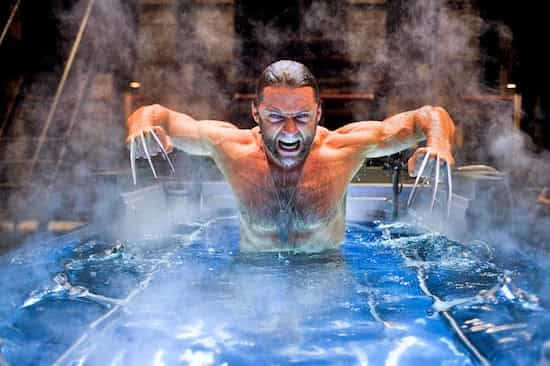

If you’re like most men, there’s a gap between your intentions and your actions. You know what you need to do to get what you want, but have difficulty in following through. Want to get better with women? Interact with more women. Want to get in shape? Eat less, move more. Want to make more money? Leverage your time and focus on income producing activities. Sounds pretty simple when I put it like that, but simple does not mean easy.
Not too long ago, I found it difficult to crawl out of bed in the morning. I was always tired and barely had the energy to stay awake, let alone go to the gym, cold approach women, and build a business. I was caught in a downward spiral, breaking out of which required a tremendous amount of will. Thankfully, I realized that the root cause of my problems could be narrowed down to the simple fact that I lacked discipline. Now, I’ve come to believe that self-discipline is the missing link between everything you are and everything you’re capable of being. I believe that self-discipline is the only difference between success and failure in every aspect of life.
In this article, I’ll discuss the #1 way I’ve found to develop my self-discipline and skyrocket my energy, mood, and focus in the process.
Cold Showers: The Secret to Sending Your Discipline Through The Roof

Picture this: You finally realize the power of rising early and set an alarm for 5:00am the next day. The next morning, you groggily wake up to the sound of your alarm buzzing and a part of you tries to convince you to hit the snooze. The decision you make in that moment – whether to get out of bed or to hit the snooze – is the decision that makes all the difference.
Self-discipline is the ability to do what needs to be done regardless of whether you feel like it or not. Getting out of bed at 5am, even though you don’t feel like it, sets the momentum towards taking right action despite what your emotions tell you. It’s the same with taking a cold shower. When you enter your shower and think about turning the knob to “C,” you will hear the same voice trying to talk you out of it. But when you turn the knob anyway, you have effectively overcome that lower part of yourself and are letting your mind know who’s in charge. Then, later on in the day, when that voice tries to talk you into skipping a workout or reaching for those cookies, you are less likely to listen.
Having taken cold showers relatively consistently over the past couple of years, I know for sure that the days I start with a cold shower are always more productive than the days that I don’t. True freedom is impossible without a mind made free through discipline, and starting my day with a cold shower is the best way I’ve found to practice my willpower, develop my discipline, and learn to associate pleasure with doing the hard things in life.
Can Taking a Cold Shower Boost Your Testosterone?

As a reader of RoK and the manosphere, you’ve probably heard about cold showers in the context of boosting testosterone. Having researched this topic in-depth (check out my ultimate guide here), I’ll be the first to tell you that there is no definitive evidence to back this claim up.
Does this mean that cold showers don’t boost testosterone?
No. What it means is that there are currently no studies that have observed the phenomenon. Understand that the majority of scientific research is driven by economics. Since cold water is cheap and nobody owns the rights to it, there is no financial incentive to drive the research. This is where anecdotal evidence (personal accounts) becomes important – and there is no shortage of that. A simple Google search for “cold shower benefits” will reveal countless testimonials from men who’ve experienced profound transformation by implementing cold showers as a regular part of their life.
Although the direct link between cold showers and testosterone has not been studied, there are a bunch of mechanisms through which cold exposure can indirectly affect your T.
The Scientifically Proven Benefits of Cold Showers
Anyone who’s taken a cold shower before can attest to the increased levels of energy and focus they feel afterwards. The reason? It all comes down to a hormone called norepinephrine.
Cold water exposure stimulates the fight-or-flight response in your sympathetic nervous system and causes a massive release of norepinephrine. In this study, 1-hour of cold water exposure at a temperature of 57°F (14°C) caused a 530% increase of norepinephrine and a 250% increase of dopamine – both of which go hand-in-hand to cause a massive lift in energy, focus, and mood. On the flip side, low levels of norepinephrine and dopamine correlate with diminished focus, drive, and depression. In fact, part of how antidepressants work is by increasing the uptake of norepinephrine and dopamine in your brain. The positive effect of cold exposure on mood is so profound that researchers have begun studying it as a possible measure against depression.
Furthermore, cold water exposure has also been shown to boost immune function, increase fat-loss, and even speed up muscle recovery.
Conclusion
All in all, starting your day with a cold shower is a quick and easy way to boost your immune system, speed up your fat-loss, increase your energy levels, and massively develop your self-discipline in the process.
Download my FREE 5-Step Testosterone Optimization Blueprint and move towards a life of more energy, health, and vitality.
Read More: The Ultimate Morning Routine For Higher Testosterone Levels